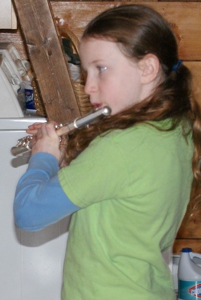
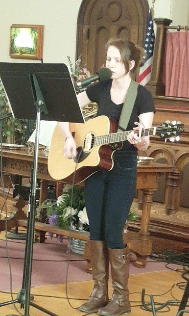
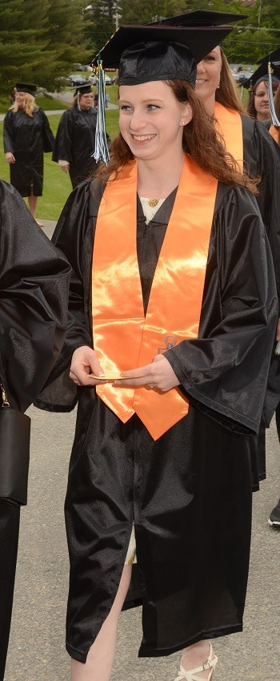

MyraBelle, or simply Belle, was the best sister, daughter, friend, and girlfriend anyone could imagine. She was also a skilled musician, exceptional student, and a loving, free-spirited, fearless individual. She was fiercely loyal, and compassionate. Belle was quick witted, funny, and intensely passionate about her beliefs, including being a committed Christian. At just over 5 feet tall and barely 100 pounds, she projected a large presence. Truly, the world was a better place with her here. However, on August 4, 2018, at the age of 19, Belle was involved in a fatal motorcycle accident. This page is dedicated to my beautiful sister MyraBelle Kidder and is a memorial of her talent and the remarkable accomplishments she achieved in her amazing, yet short lifetime. Use the menu above to navigate to specific segments of this page or just scroll through her story. Thank you for visiting!
Piano and Early Years
Belle Playing Piano
The early years and her musical beginnings: With two older brothers already being home schooled, Belle began her education at a young age. Possessing a natural ability for language, she started reading at 4 years old! She enjoyed doing her school work and was meticulous in her lessons. As part of her education, she began piano lessons at 5. This was the beginning of her varied and notable music career. Throughout the years of playing piano and perfecting her skill, Belle performed in various recitals and events, including a concert at the Town Hall Theater in Middlebury, VT to celebrate the inaugural year of the Middlebury Community Music Center in 2015. She willingly shared her talent by playing at various events; accompanying worship at church, performing background music at a Chrismas festival for children, and even providing music for weddings. MENU
Wind Instruments
As she entered the 5th grade in home schooling, Belle decided to expand her music education by learning to play the flute. She contacted the Benson Village School and began instruction with the Benson Village School Band. Under the skillful guidance of Ms. Broughton and her private tutor, Kristy Papandrea, she conquered the basics quickly. In subsequent years, she continued at the Benson School and then became a member of the Fair Haven Union High School Band. She first auditioned for the Green Mountain Music Festival in 2011 and earned a place in the Middle School Wind Ensemble; then from 2012 until 2015 she played in the festival each year in the Symphonic Band. She also began playing the piccolo and earned a place with that instument in the Green Mountain Music Festival in 2016. In addition, she participated in the 2016 All State Music Festival, also playing the piccolo. Belle was a member of the Lakes Region Youth Orchestra and performed in several other music events including the Castleton University High School Honors Music Festival in 2015 and 2016, and the 2014 Northeast Instrumental Music Festival at the Lake Placid Center for the Performing Art in Lake Placid, NY. MENU
 Belle Playing the Flute
Guitar and Worship
 Belle Playing Guitar at Church
While continuing to master the flute and piccolo and improve her piano technique, Belle decided it was time to learn another instrument and taught herself to play the guitar, mainly through online videos. At Fair Haven High School, she then took guitar classes where her skills improved. She partcipated in school talent shows and shared her talent for playing the guitar and singing by being a member of the worship team at New Life Ministries/Fair Haven Baptist Church, where she served in this capacity for 5 years until she left for college. MENU
Community College of Vermont
Commuity College of Vermont (CCV): While still home schooling, Belle was part of CCV's Introduction to College Studies at age 14. Belle did have a competitive edge, and enjoyed and excelled in the classroom environment. After completing this course, she began taking liberal arts classes at CCV. Then, still under the umbrella of home schooling, she participated in CCV's early college program and, in 2017, graduated Cum Laude with her Associate's Degree at 17. During her time at CCV, Belle was inducted into the Phi Theta Kappa Honor Society. She was a spokesperson for CCV's Introduction to College Studies, and wrote an introduction to the new text to be used for the class in the fall of 2018. During this time, she was still completing her home school lessons as well as striving to improve her music abilities and participating in various performances. She was also a fierce member of Fair Haven High School's junior varsity soccer team. She was a Job Hunt Helper during the summer of 2017, and also worked part-time in retail. She was loved and appreciated by fellow students and employees. This is a great article about Belle starting her college. MENU
A picture Belle took of her cap Belles Diploma
 Graduating from CCV
Roberts Weslyan University
Belle visiting Roberts
Roberts: After graduating from CCV, she was accepted at Roberts Wesleyan College. In the fall of 2017, she started classes as a junnior in their Social Work Program. She completed that year, achieving the Dean's List both semesters and completing her first internship. She was an encouragement to others and made some wonderful friends while there. Belle continued to prove that she was indeed highly disciplined and motivated. She was scheduled to finish her senior year and anticipated graduating with her Bachelor's Degree in 2019, when she would have still been only 20 years old! MENU